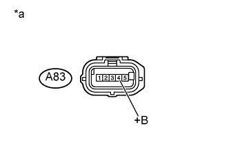

DTC P052F Напряжение в системе управления свечами накаливания |
DTC P0683 Цепь обмена данными между модулем управления свечами накаливания и PCM |
| Режим поездки при обнаружении DTC | Условие обнаружения DTC | Неисправный участок |
| Войдите в режим активной диагностики. | При включенных свечах накаливания контроллер свечей накаливания не менее 3 раз определяет, что напряжение аккумуляторной батареи составляет 18,4 В или выше (логика диагностирования за 2 поездки). | Контроллер свечей накаливания |
| Режим поездки при обнаружении DTC | Условие обнаружения DTC | Неисправный участок |
| Войдите в режим активной диагностики. | При включенных свечах накаливания ECM регистрирует отсутствие выходного сигнала блока управления свечами накаливания в течение 3 с несмотря на то, что ECM выдает сигнал SI (команду на включение) (логика диагностирования за 1 поездку). |
|
| 1.ПРОВЕРЬТЕ, ВЫВОДЯТСЯ ЛИ DTC |
Подсоедините портативный диагностический прибор к DLC3.
Включите зажигание (IG) и портативный диагностический прибор.
Войдите в следующие меню: Powertrain / Engine and ECT / DTC.
Считайте коды DTC.
| Результат | Следующий шаг |
| P0683 выводится | А |
| P052F выводится | B |
|
| ||||
| А | |
| 2.ПРОВЕРЬТЕ КОНТРОЛЛЕР СВЕЧЕЙ НАКАЛИВАНИЯ (ЦЕПЬ ПИТАНИЯ) |
|  |
Отсоедините разъем контроллера свечей накаливания.
Измерьте напряжение в соответствии со значениями, приведенными в таблице.
| Контакты для подключения диагностического прибора | Положение переключателя | Заданные условия |
| A83-4 (+B) - масса | Зажигание включено (IG) | 11-14 В |
| A83-4 (+B) - масса | Зажигание выключено | Менее 0,5 В |
| *a | Вид спереди разъема со стороны жгута проводов: (к контроллеру свечей накаливания) |
Подсоедините разъем контроллера свечей накаливания.
|
| ||||
| OK | |
| 3.ПРОВЕРЬТЕ ЖГУТ ПРОВОДОВ И РАЗЪЕМ (КОНТРОЛЛЕР СВЕЧЕЙ НАКАЛИВАНИЯ – МАССА) |
Отсоедините разъем контроллера свечей накаливания.
Измерьте сопротивление в соответствии со значениями, приведенными в таблице ниже.
| Контакты для подключения диагностического прибора | Условие | Заданные условия |
| A83-1 (GND) - масса | Всегда | Менее 1 Ом |
Подсоедините разъем контроллера свечей накаливания.
|
| ||||
| OK | |
| 4.ПРОВЕРЬТЕ ЖГУТ ПРОВОДОВ И РАЗЪЕМ (КОНТРОЛЛЕР СВЕЧЕЙ НАКАЛИВАНИЯ – ECM) |
Отсоедините разъем контроллера свечей накаливания.
Отсоедините разъем ЭБУ.
Измерьте сопротивление в соответствии со значениями, приведенными в таблице ниже.
| Контакты для подключения диагностического прибора | Режим | Заданные условия |
| A83-3 (SI) - C91-20 (GLDO) | Всегда | Менее 1 Ом |
| A83-5 (DI) - C91-21 (GLDI) | Всегда | Менее 1 Ом |
| Контакты для подключения диагностического прибора | Режим | Заданные условия |
| A83-3 (SI) или C91-20 (GLDO) - масса | Всегда | 10 кОм или более |
| A83-5 (DI) или C91-21 (GLDI) - масса | Всегда | 10 кОм или более |
Подсоедините разъем контроллера свечей накаливания.
Подсоедините разъем ECM.
|
| ||||
|
| ||||
| 5.ПРОВЕРЬТЕ ЖГУТ ПРОВОДОВ И РАЗЪЕМ (КОНТРОЛЛЕР СВЕЧЕЙ НАКАЛИВАНИЯ – ИНТЕГРИРОВАННОЕ РЕЛЕ № 1) |
Отсоедините разъем контроллера свечей накаливания.
Извлеките интегрированное реле № 1 из блока реле № 2.
Измерьте сопротивление в соответствии со значениями, приведенными в таблице ниже.
| Контакты для подключения диагностического прибора | Условие | Заданные условия |
| A83-4 (+B) - 1B-8 | Всегда | Менее 1 Ом |
| Контакты для подключения диагностического прибора | Условие | Заданные условия |
| A83-4 (+B) или 1B-8 - масса | Всегда | 10 кОм или более |
Подсоедините разъем контроллера свечей накаливания.
Установите интегрированное реле № 1.
|
| ||||
| OK | |
| 6.ПРОВЕРЬТЕ СИСТЕМУ ЗАРЯДКИ |
Проверьте систему зарядки и произведите необходимый ремонт (Нажмите здесь).
|
| ||||
| 7.ОТРЕМОНТИРУЙТЕ ИЛИ ЗАМЕНИТЕ ЖГУТ ПРОВОДОВ ИЛИ РАЗЪЕМ |
Отремонтируйте или замените жгут проводов или разъем.
|
| ||||
| 8.ЗАМЕНИТЕ КОНТРОЛЛЕР СВЕЧЕЙ НАКАЛИВАНИЯ |
Замените контроллер свечей накаливания (Нажмите здесь).
| ДАЛЕЕ | |
| 9.ПРОВЕРЬТЕ, УСТРАНЕНА ЛИ ДОЛЖНЫМ ОБРАЗОМ НЕИСПРАВНОСТЬ |
Подсоедините портативный диагностический прибор к DLC3.
Удалите коды DTC (Нажмите здесь).
Выключите зажигание и подождите не менее 30 с.
Включите зажигание (IG).
Включите портативный диагностический прибор.
Переключите ECM из нормального режима диагностики в режим активной диагностики посредством портативного диагностического прибора (Нажмите здесь).
Убедитесь, что DTC не выводится снова.
|
| ||||
| OK | ||
| ||
| 10.ЗАМЕНИТЕ ECM |
Замените ECM (Нажмите здесь).
| ДАЛЕЕ | |
| 11.ПРОВЕРЬТЕ, УСТРАНЕНА ЛИ ДОЛЖНЫМ ОБРАЗОМ НЕИСПРАВНОСТЬ |
Подсоедините портативный диагностический прибор к DLC3.
Удалите коды DTC (Нажмите здесь).
Выключите зажигание и подождите не менее 30 с.
Включите зажигание (IG).
Включите портативный диагностический прибор.
Переключите ECM из нормального режима диагностики в режим активной диагностики посредством портативного диагностического прибора (Нажмите здесь).
Убедитесь, что DTC не выводится снова.
| ДАЛЕЕ | ||
| ||
| 12.ЗАМЕНИТЕ КОНТРОЛЛЕР СВЕЧЕЙ НАКАЛИВАНИЯ |
Замените контроллер свечей накаливания (Нажмите здесь).
| ДАЛЕЕ | |
| 13.ПРОВЕРЬТЕ, УСТРАНЕНА ЛИ ДОЛЖНЫМ ОБРАЗОМ НЕИСПРАВНОСТЬ |
Подсоедините портативный диагностический прибор к DLC3.
Сбросьте коды DTC (Нажмите здесь).
Выключите зажигание и подождите не менее 30 с.
Включите зажигание (IG).
Включите портативный диагностический прибор.
Переключите ECM из нормального режима диагностики в режим активной диагностики посредством портативного диагностического прибора (Нажмите здесь).
Убедитесь, что DTC не выводится снова.
| ДАЛЕЕ | ||
| ||